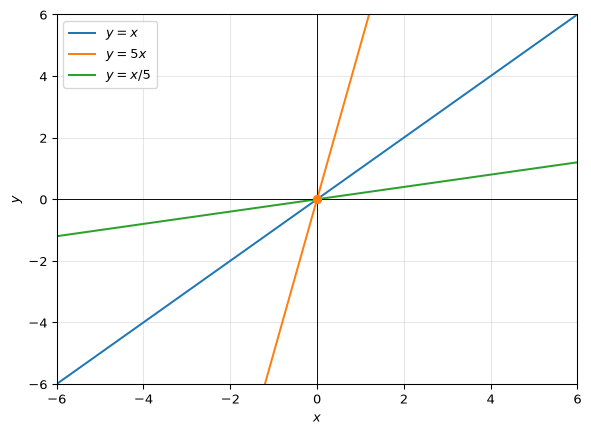
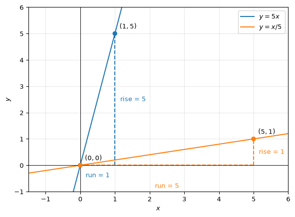

Look at the following program that plots equations of the form \(y=mx\).
import numpy as np # Import NumPy for numerical calculationsimport matplotlib.pyplot as plt # Import Matplotlib for plotting graphsx = np.linspace(-6, 6, 400) # Create 400 x-values from -6 to 6fig, ax = plt.subplots() # Create a graph and axis objectfor m, label in [(1, r'$y=x$'), (5, r'$y=5x$'), (1/5, r'$y=x/5$')]: ax.plot(x, m*x, label=label) # Plot each straight line y = mx and give it a legend labelax.scatter([0], [0], color=['tab:orange'], zorder=3) # Mark the origin (0,0) in orange on top of the linesax.axhline(0, color='black', lw=.7) # Draw the x-axis through y = 0ax.axvline(0, color='black', lw=.7) # Draw the y-axis through x = 0ax.set(xlim=(-6, 6), ylim=(-6, 6), xlabel=r'$x$', ylabel=r'$y$') # Set the graph limits and axis labelsax.grid(True, alpha=.3) # Add a light grid to the graphax.legend() # Show the legend for the three linesplt.show() # Display the final graph

This program below plots two lines \(y=mx\), marks their rise over run, marks a few points with colored dots, and writes a few names for points and lines etc.
x_values = np.linspace(-1.5, 6, 400) # Create 400 x-values from -1.5 to 6 for plottingfig, ax = plt.subplots(figsize=(7, 5)) # Create a figure 7 inches wide and 5 inches tallax.plot(x_values, 5*x_values, label=r'$y=5x$', color='tab:blue')# Plot the line y = 5x; label gives the legend text, color makes it blueax.plot(x_values, x_values/5, label=r'$y=x/5$', color='tab:orange')# Plot the line y = x/5; x_values/5 gives the y-values, label sets the legend name, color makes it orange# Rise and run for y=5x: (0, 0) to (1, 5).ax.plot([0, 1], [0, 0], '--', color='tab:blue', lw=1.5)# Draw a dashed horizontal run from x=0 to x=1 at y=0; '--' makes it dashed, color uses blue, lw sets line widthax.plot([1, 1], [0, 5], '--', color='tab:blue', lw=1.5)# Draw a dashed vertical rise from (1,0) to (1,5); color is blue, lw sets the line widthax.annotate('run = 1', (0.5, 0), xytext=(0, -18), textcoords='offset points', ha='center', color='tab:blue')# Put the text 'run = 1' at (0.5,0); xytext shifts the label by 0 points horizontally and -18 points vertically; offset points means the shift is measured in points; ha centers the text; color makes it blueax.annotate('rise = 5', (1, 2.5), xytext=(8, 0), textcoords='offset points', va='center', color='tab:blue')# Put the text 'rise = 5' at (1,2.5); xytext shifts it by 8 points right and 0 points vertically; textcoords uses points for the shift; va centers the text vertically; color makes it blue# Rise and run for y=x/5: (0, 0) to (5, 1).ax.plot([0, 5], [0, 0], '--', color='tab:orange', lw=1.5)# Draw the dashed horizontal run from x=0 to x=5 at y=0; color uses orange and lw sets the line widthax.plot([5, 5], [0, 1], '--', color='tab:orange', lw=1.5)# Draw the dashed vertical rise from (5,0) to (5,1); color is orange, lw sets the line widthax.annotate('run = 5', (2.5, 0), xytext=(0, -34), textcoords='offset points', ha='center', color='tab:orange')# Put the text 'run = 5' at (2.5,0); xytext shifts it by 0 points horizontally and -34 points vertically; offset points uses points for the shift; ha centers the label; color makes it orangeax.annotate('rise = 1', (5, 0.5), xytext=(8, 0), textcoords='offset points', va='center', color='tab:orange')# Put the text 'rise = 1' at (5,0.5); xytext shifts it by 8 points to the right; textcoords uses point offsets; va centers vertically; color makes it orangeax.scatter([0, 1, 0, 5], [0, 5, 0, 1], color=['tab:blue', 'tab:blue', 'tab:orange', 'tab:orange'], zorder=3)# Plot four points at (0,0), (1,5), (0,0), (5,1); the x and y lists give the coordinates; color gives each point a color in order; zorder=3 draws them on top of the linesax.annotate(r'$(0,0)$', (0, 0), xytext=(7, 7), textcoords='offset points')# Label the point (0,0) with text $(0,0)$; xytext shifts the label right by 7 points and up by 7 points; textcoords uses point offsetsax.annotate(r'$(1,5)$', (1, 5), xytext=(7, 7), textcoords='offset points')# Label the point (1,5) with text $(1,5)$; xytext moves the label 7 points right and 7 points upax.annotate(r'$(5,1)$', (5, 1), xytext=(7, 7), textcoords='offset points')# Label the point (5,1) with text $(5,1)$; xytext moves the label 7 points right and 7 points upax.axhline(0, color='black', lw=.7) # Draw the horizontal x-axis at y=0; color makes it black and lw sets the line thicknessax.axvline(0, color='black', lw=.7) # Draw the vertical y-axis at x=0; color makes it black and lw sets the line thicknessax.set(xlim=(-1.5, 6), ylim=(-1, 6), xlabel=r'$x$', ylabel=r'$y$')# Set the x and y limits of the graph; xlabel and ylabel give the names for the axesax.grid(True, alpha=.3) # Add a light grid with transparency 0.3 to make the graph easier to readax.legend() # Show the legend for the two plotted linesplt.show() # Display the final graph on screen

Figure 1: Rise and run for calculating the gradient of two lines.
Further work
Using the above two programs, hand assemble a program that plots \(y=3x+2\) and \(y=2x+3\). Mark the point of intersection with a dot and label it. Draw rise and run lines and label their lengths.
Challenge problem: Can you think of a program that takes the values of m1 and c1 for line 1, m2 and c2 for line 2, plots them and identifies and marks the point of intersection? Write the algebraic logic first, see if you can write the pseudocode.